什么是转换
把一个变量（源）的值赋值给另一个变量（目标）。在赋值之前，源的值必须转换成目标类型的值。
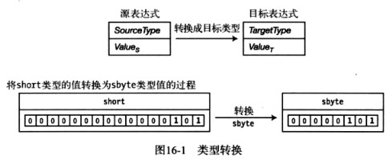
例：两个不同类型的变量的赋值。
short var1 = 5; |
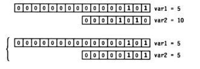
隐式转换
有些类型的转换不会丢失数据或精度。如短类型转化为长类型。
- 语言会自动做这些转换，这叫做隐式转换。
- 从位数更少的源转换为位数更多的目标类型时，目标中多出来的位需要用0或1填充。
- 当从更小的无符号类型转换为更大的无符号类型时，目标类型多出来的最高位都以0进行填充，这叫做零扩展。
例：使用零扩展把8位的10转化为16位的10。
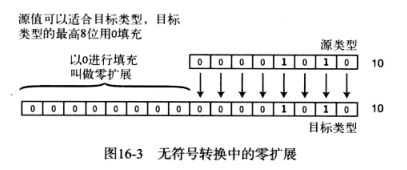
对于有符号类型的转换而言，额外的高位用源表达式的符号位进行填充。这样维持了被转换的值的正确符号和大小。这叫做符号扩展。
例：10和-10的转换。

显式转换和强制转换
把长类型转化为短类型的时候，有可能会损失精度。
例：把1365的ushort类型转换为byte类型会导致数据丢失。
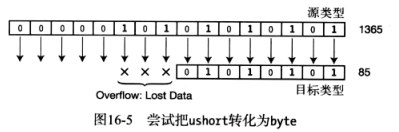
因为，ushort的范围是0~65535，而byte的范围是0~255。源值是1365，而目标的最大值只能是255，所以源值的最高位的数据会丢失。最终结果值为85。
强制转换
对于预定义的类型，C#会自动完成类型转换。但是只针对那些从源类型到目标类型不会发生数据丢失的情况。
对于会发生数据丢失的情况，必须使用强制转换表达式，这就是显式转换。
例：强制转换表达式将两个ushort类型的值转换为byte类型。第一种没有数据丢失，第二种最高位丢失了。
ushort sh = 10; |
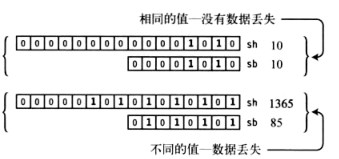
注意：sb = (byte)sh，即将长类型转换为短类型，必须使用强制转换，否则会编译错误。
转换的类型
有很多标准的、预定义的用于数字和引用类型的转换。
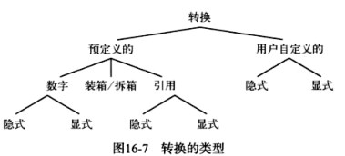
注意：
- 除了标准转换，还可以为自定义类型定义隐式转换和显式转换。
- 还有一个预定义的转换类型，叫做装箱，可以将任何值类型转换为：object类型、System.ValueType类型。
- 拆箱可以将一个装箱的值转换为原始的值。
数字的转换
任何数字都可以转换为其他数字类型。一些转换是隐式的，而另一些转换则必须是显式的。
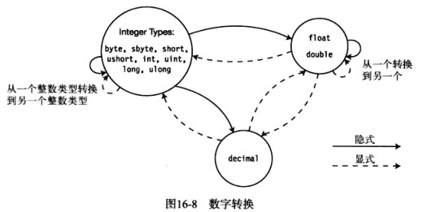
隐式数字转换
源类型到目标类型按照箭头进行隐式转换。如果上方没有箭头，则需要显式转换。占据较少位的数字类型可以隐式转换为占据较多位的数字类型。
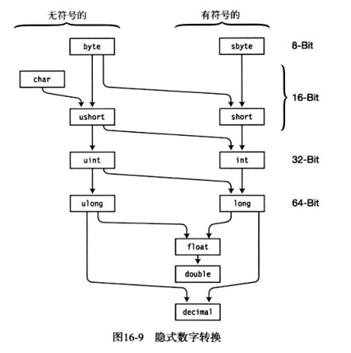
溢出检测上下文
对于整数类型，C#给我们提供了选择运行时是否应该在进行类型转换时检测结果溢出的能力。通过checked运算符和checked语句来实现。
代码片段是否被检查称作溢出检测上下文。
如果我们指定一个表达式或一段代码为checked，CLR会在转换产生溢出时抛出一个OverflowException异常。
如果代码不是checked，转换会继续而不管是否产生溢出。
默认的溢出检测上下文是不检查。
checked和unchecked运算符
checked和unchecked运算符控制表达式的溢出检测上下文。表达式放置在一对圆括号内并且不能是一个方法。
checked(表达式); |
例：在unchecked上下文中，会忽略溢出，结果值是208。在checked上下文中，抛出OverflowException异常。
ushort sh = 2000; |
checked语句和unchecked语句
checked和unchecked运算符用于圆括号内的单个表达式。而checked和unchecked语句执行相同的功能，但控制的是一块代码中的所有转换。
例：checked语句和unchecked语句可以被嵌套在任意层次。
byte sb; |
显式数字转换
显式转换则可能会丢失数据。因此，作为一个程序员，知道发生数据丢失时转换会如何处理很重要。
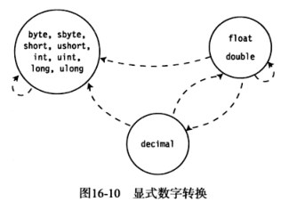
整数类型到整数类型
在checked的情况下，如果转换会丢失数据，操作会抛出一个OverflowException异常。在unchecked情况下，丢失的位不会发出警告。
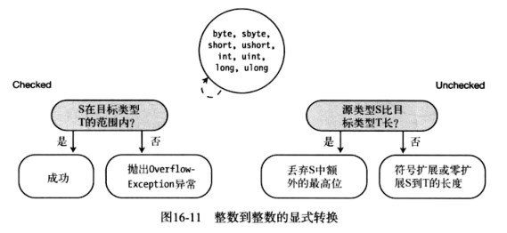
float或double转到整数类型
把浮点类型转换为整数类型时，值会舍掉小数截断为最接近的整数。
如果截断后的值不在目标类型的范围内：
- 如果溢出检测上下文是checked，则CLR会抛出OverflowException异常。
- 如果上下文是unchecked，则C#将不定义它的值应该是什么。
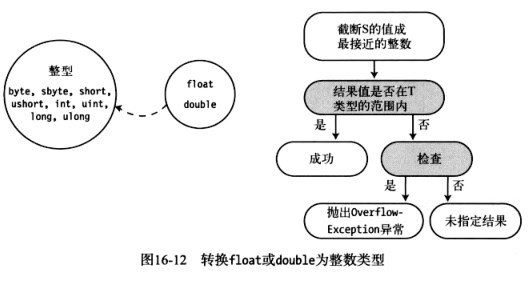
decimal到整数类型
当从decimal转换到整数类型时，如果结果值不在目标类型的范围内，则CLR会抛出OverflowException。
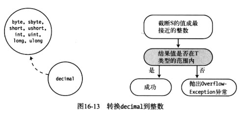
double到float
float类型的值占32位，而double类型的值占64位。double类型的值被舍入到最接近的float类型的值。
- 如果值太小而不能用float表示，那么值会被设置为正或负0。
- 如果值太大而不能用float表示，那么值会被设置为正无穷大或负无穷大。
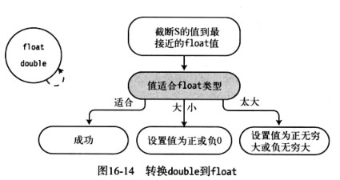
float或double到decimal
- 如果值太小而不能用decimal类型表示，那么值会被设置为0。
- 如果值太大，那么CLR会抛出OverflowException异常。
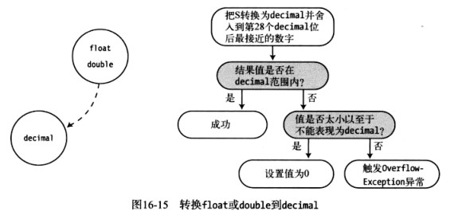
decimal到float或double
从decimal类型转换到float类型总是会成功的。然而，可能会损失精度。
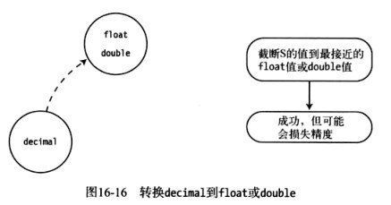
引用转换
引用类型对象由内存中的两部分组成：引用和数据。由引用保存的那部分信息是它指向的数据类型。引用转换接受源引用并返回一个指向堆中同一位置的引用，但是把引用“标记”为其他类型。
例：引用转换示例。
class A |
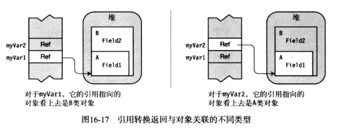
隐式引用转换
隐式引用转换，与语言为我们自动实现的隐式数字转换类似。
- 所有引用类型可以隐式转换为object类型。
- 任何类型可以隐式转换到它继承的接口。
- 类可以隐式转换到：
- 它继承链中的任何类。
- 它实现的任何接口。
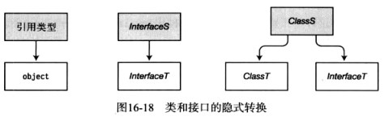
委托可以隐式转换成.NET BCL类和接口。如：System.Delegate、System.MulticastDelegate等。
ArrayS数组，其中的元素是Ts类型，可以隐式转换成：
- .NET BCL类和接口，如：System.ICloneable、System.IList、System.IEnumerable等。
- 另一个数组ArrayT，其中的元素是Tt类型（如果满足下面的所有条件）。
- 两个数组有一样的维度。
- 元素类型Ts和Tt都是引用类型。
- 在类型Ts和Tt中存在隐式转换。

显式引用转换
显式引用转换：从一个普通类型，到一个更加精确类型的引用转换。
显式转换包括：
- 从object到任何引用类型的转换。
- 从基类到从它继承的类的转换。
倒转图16-18、16-19的箭头方向，即为显式引用转换。
注意：如果转换的类型不受限制，很可能会导致我们很容易地尝试引用在内存中实际并不存在的类成员。然而，编译器允许这样的转换。然而，系统在运行时遇到它们，则会抛出一个异常。
例：错误的显式引用转换。
class A |
- 如果myVar2尝试访问Field2，它会尝试访问对象中的“B部分”的字段（它不再内存中），这回导致内存错误。
- 运行时会捕获到这种不正确的强制转换并且抛出InvalidCastException异常。但是不会导致编译错误。
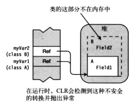
有效显式引用转换
在运行时能成功进行（不抛出InvalidCastException异常）显式转换有3种情况。
第一种情况
显式转换是没有必要的。也就是说，语言已经为我们进行了隐式转换。衍生类到基类的转换总是隐式转换的。
B myVar1 = new B(); |
第二种情况
源引用是null。转换基类的引用到衍生类的引用是不安全的，但是由于源引用是null，这种转换还是允许的。
A myVar1 = null; |
第三种情况
由源引用指向的实际数据可以被安全地进行隐式转换。
B myVar1 = new B(); |
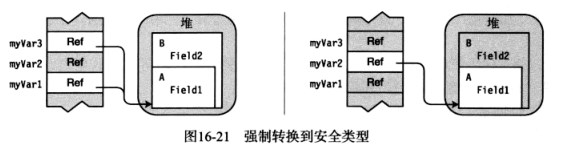